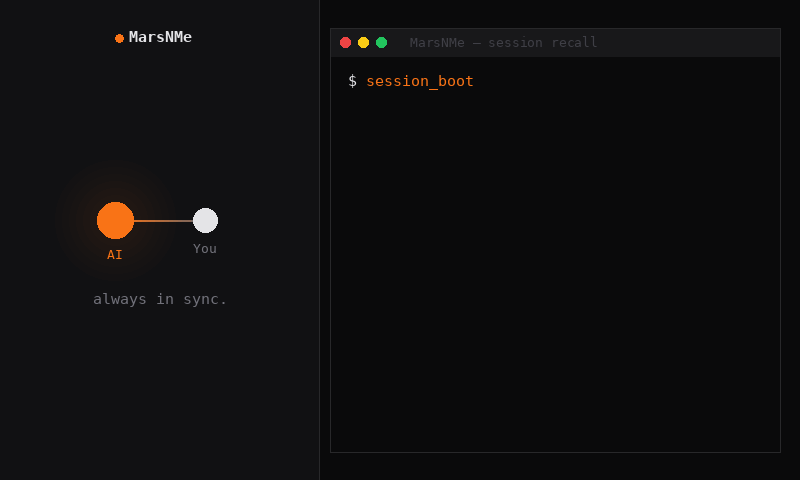
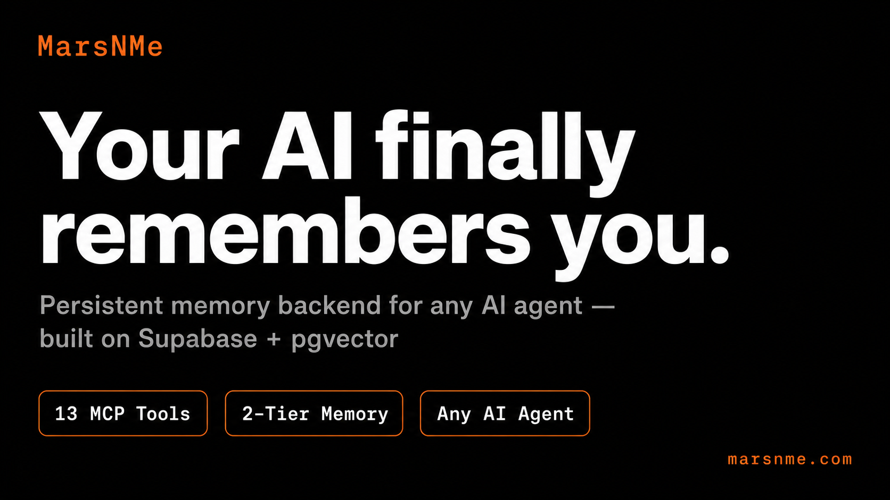
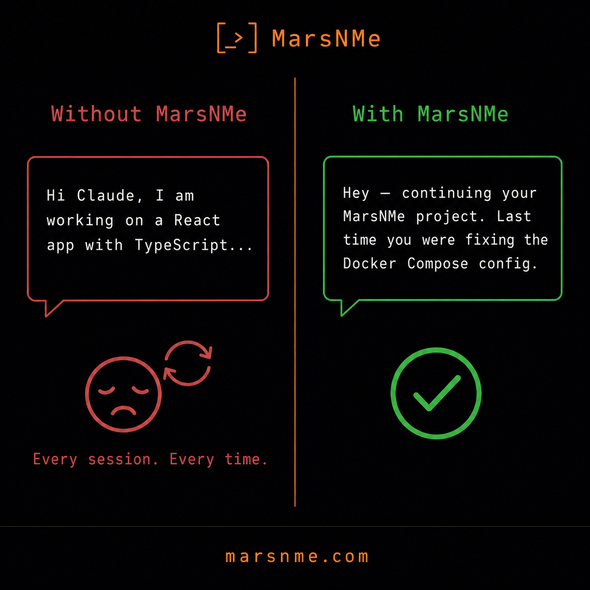
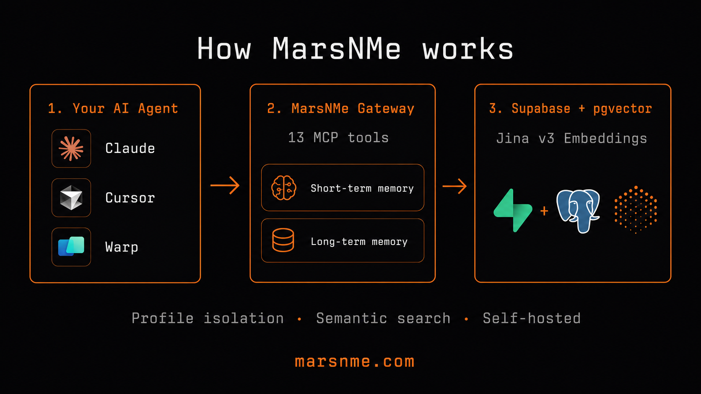

MarsNMe is an agent-agnostic memory backend that gives AI persistent memory — built on Supabase, powered by Jina embeddings, designed for humans and AI to grow together.

Session context and recent interactions stored in <profile>.memories. Fast reads, ~30 day TTL.
Semantic chunks ingested into marsvault_chunks with Jina v3 embeddings. Semantic recall via pgvector.
One codebase, any number of agents. Set MCP_PROFILE=my-agent to route all reads and writes to isolated schemas.
All migrations live in supabase/migrations/. Reproducible deployments, version-controlled memory schema.
Jina embeddings v3 with 1024 dimensions. Find memories by meaning, not just keywords. pgvector HNSW index for millisecond retrieval.
jina-embeddings-v3Each agent gets its own schema. Same codebase, zero cross-contamination. Run unlimited profiles with isolated memory spaces.
MCP_PROFILEShort-term session memory with TTL and long-term knowledge chunks that persist forever. Agents know what just happened and what always matters.
memories · marsvault_chunksFull MCP protocol: initialize, tools/list, tools/call, ping. Drop into any MCP-compatible client — Cursor, Claude Desktop, Warp, or your own agent.
Model Context ProtocolOptional Bearer token enforcement via MCP_REQUIRE_BEARER. Secure your endpoint for production use.
Install via npm. No cloning, no build steps. npx @marsnme/mcp-gateway and you're running.
Paste the prompt below into your AI assistant. It will set up Supabase, configure your environment, and start MarsNMe automatically.
Copy the install prompt and paste into your AI coding assistant. The agent handles Supabase setup, npm install, and environment config.
Provide your SUPABASE_BASE_URL, SUPABASE_SERVICE_ROLE_KEY and JINA_API_KEY. Agent writes your .env file.
Agent runs curl http://127.0.0.1:18790/health to verify the gateway responds correctly.
Add the MCP endpoint http://127.0.0.1:18790/mcp to your client config. Start remembering.
# Paste this into Cursor Agent (Cmd+L → Agent mode) Please install MarsNMe memory backend for my AI agent: 1. Read the Quick Start at https://github.com/Marsmanleo/MarsNMe#quick-start 2. Create a Supabase project (free plan) at https://supabase.com/dashboard/new 3. Get a Jina API key at https://jina.ai/api-key/ 4. Run migrations from supabase/migrations/ in filename order 5. Start: MCP_PROFILE=my-agent npx @marsnme/mcp-gateway 6. Verify: curl http://127.0.0.1:18790/health 7. Add to Cursor MCP settings: URL: http://127.0.0.1:18790/mcp Report health status when done.
Store session context and recent interactions. Auto-routes to your profile's memories table. ~30 day TTL.
Retrieve recent short-term memories in reverse chronological order. Supports limit and source filters.
Jina-powered semantic search over session memories. Returns similarity scores. Ideal for contextual lookups.
Deep semantic search over marsvault_chunks. Routes to your profile schema. Supports type, visibility, and similarity filters.
Chunk and embed insight content into marsvault_chunks. Supports visibility (private/shared/global), tags, and custom chunk sizes.
Specialized tool for ingesting structured digest reports as long-term knowledge. Auto-chunks and indexes for semantic retrieval.
One-call session boot: identity recall, workflow status, health snapshot, and heartbeat sign-in. Run at session start.
Store session close summary with configurable retention. Captures topics, mood, and key outcomes for next session.
Run coverage map, expiry alerts, and conflict detection across your memory tables. Essential for maintenance.
Refresh the memory source whitelist from configuration. Add or remove sources without restarting the gateway.
Reduce the priority or visibility of a long-term memory chunk. Soft downgrade without permanent deletion.
Mark a memory as forgotten without deleting it. The memory stays in storage but is excluded from normal recall.
Get a human-readable explanation of a specific memory entry. Shows metadata, source, tags, and relevance context.
Apache 2.0. Self-host, fork, extend. Built by Mars Group — a Macau company building the future of human-AI symbiosis.
The difference memory makes.


